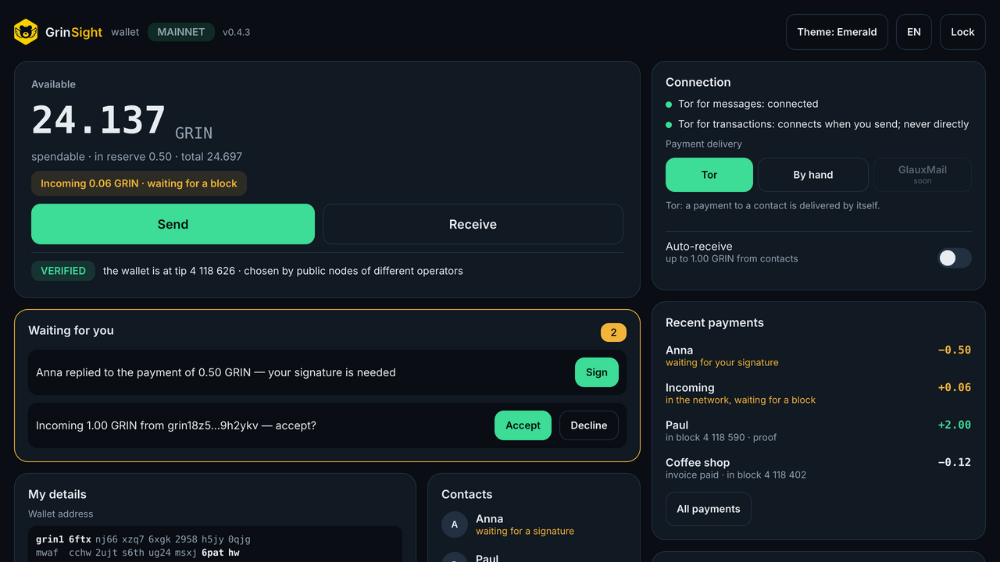

Don’t trust the balance.
Check it.
GrinSight takes data from Grin nodes and verifies it on your device — headers, proof of work, the coin state and every new block. The tip is confirmed with public nodes of different operators. No own full node needed.

Download the latest: 0.4.6 latest
Latest release: all files, source, SHA256SUMS.txt →Windows 10/11 x64
Installer, no administrator rights. Installs as “GrinSight Light”, next to GrinSight 0.4.2 if you have it. Wallet data lives in %LOCALAPPDATA%\GrinSightLight.
Debian / Ubuntu amd64
sudo apt install ./GrinSight-0.4.6-linux-amd64.deb — the wallet, the chain process and Tor inside; “GrinSight Light” is added to the menu.
Android 8+ preview
APK for arm64. Allow installs from this source. Checked on an emulator only, not on a real phone yet.
How to use it
Six steps from the download to the first payment.
1. Check the file
Compare with SHA256SUMS.txt: Windows — Get-FileHash, Linux — sha256sum. The files are not signed.
2. Create a wallet
Any password is accepted; twelve characters or more are advised. Write the 24 words on paper: they are shown once.
3. Wait for “Verified”
It appears only when the wallet is at the tip and can send. “Synchronisation” shows the whole path with numbers; “Problems” says what is wrong and what to try.
4. Receive
“Receive” → copy your address for the sender: a payment sent to it over Tor arrives by itself and waits for your yes, about 40 seconds. Or paste the Slatepack text you were sent and return the reply.
5. Send
“Send” → the amount → the recipient’s grin1 address: the payment goes over Tor and the reply comes back for your signature. Or by hand: make the Slatepack text → paste the reply. Check the amount, the fee and the address → sign.
6. Restore
“Restore” on the first screen → the 24 words → a new password. Old outputs are searched for a few more minutes.
Four checks before you see a number
If a check fails, the wallet shows no balance rather than a wrong one.
Headers
The history before the built-in point is checked by sampling its work with a proof shipped in the program; every header from the point to the tip is checked by the node’s own rules: proof of work, difficulty, links. A heavier branch replaces the tip only with more total work.
Coin state
The unspent outputs are collected from PIBD segments at the nodes’ archive point and matched to the roots in a verified header.
Every block
Blocks from the archive point to the tip are checked against their headers before the wallet sees them.
Tip and time
Public nodes of different operators are asked over HTTPS for the tip and the time. Your outputs are found with your own keys; no server is asked for a balance.
What was checked
What GrinSight does not promise
No independent security audit by a human. It is a research wallet; the result depends on the starting point, the network and the implementation.
Nothing is signed. Check the SHA-256. Payments over Tor were exchanged on mainnet with Grim 0.3.7 only, by 0.4.3; no payment was made by 0.4.6 on a live network yet; other wallets, paying an invoice and cancelling are covered by tests, not by a live run.
Not in this version: scanning QR codes (they are shown, not scanned), GlauxNet, “Check myself” from the first block. Android was run on an emulator only; the macOS image was built on GitHub’s machine and not started on a real Mac.